Straordinaria traversata in versante val Piave, altissimi sopra il vuoto inquietante del Valón de Buscada: ottima alternativa per salire il Borgà.
Stok è (o era) il soprannome di una famiglia di Erto: probabile quindi che questi fossero soliti andare a caccia su questa cengia.
Saliamo verso forcella Borgà: in foto i soleggiati pendii de La Palazza.
Ormai prossimi alla forcella; a sx il pendio d'accesso alla cengia. Il percorso per arrivarci non è dei più semplici, e stranamente non ho scattato foto in quel tratto.
L'impressionante Valón de Buscada...
...con le belle crode del Bosconero in fondo.
Arriviamo all'inizio della cengia.
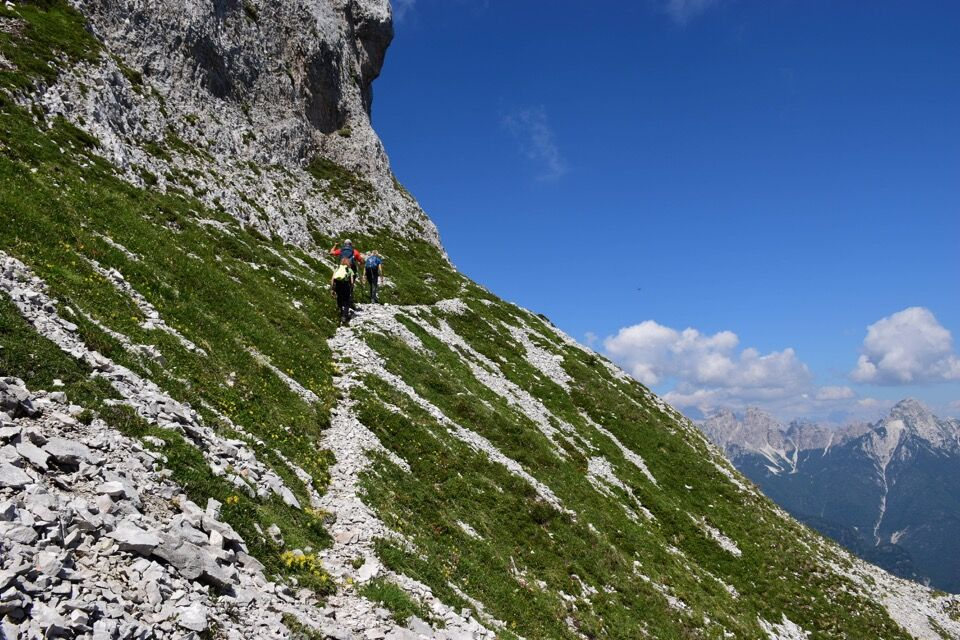Il primo tratto, pur non avendo difficoltà tecniche, è impressionante: mai ho avvertito un tale senso di vuoto al di là della cengia.
 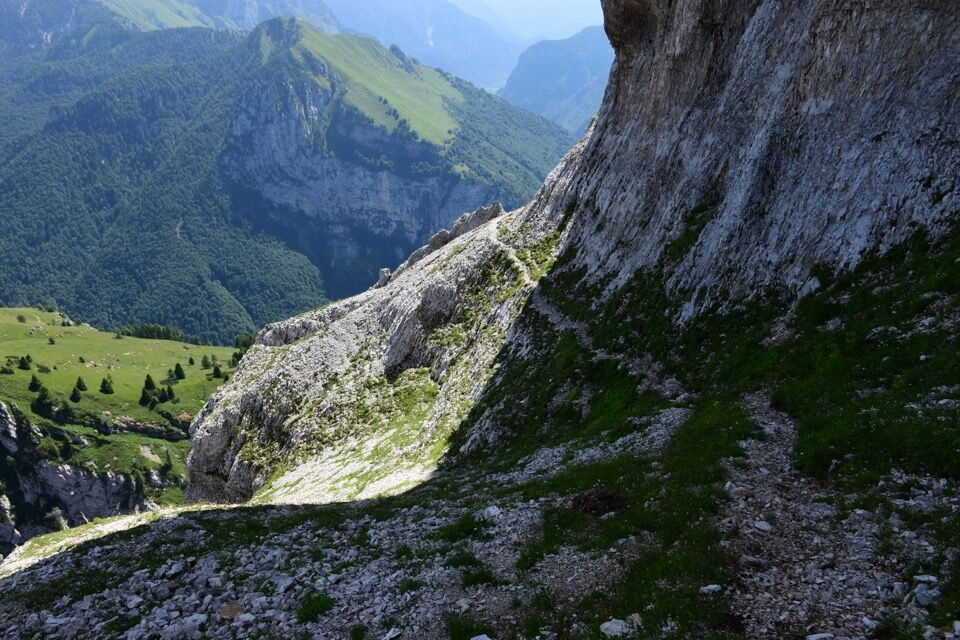
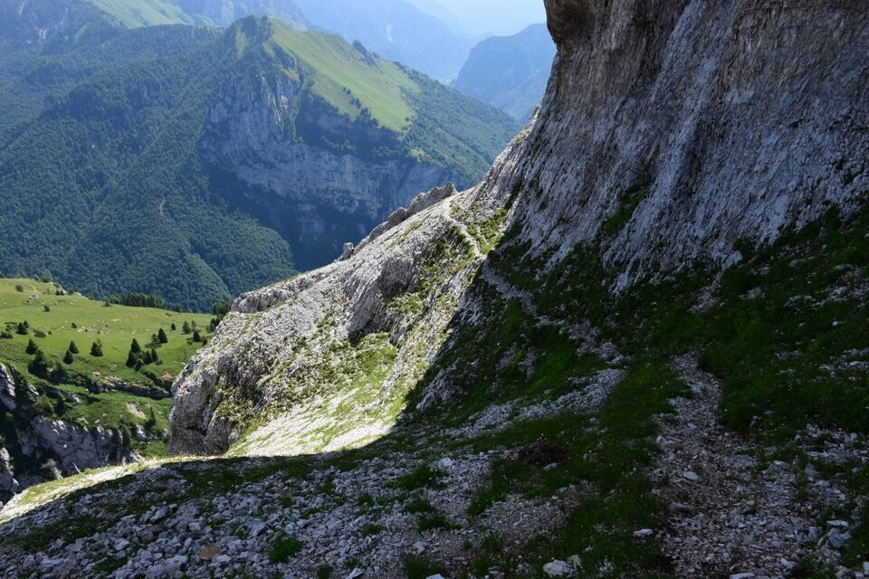
Dal primo spallone, bellissima visuale verso la continuazione della cengia: certo che non sembra molto invitante...
C'è anche una cengia più alta che collega i Libri di San Daniele con la cima: pure quella è percorribile, e infatti c'è un bel sentiero di camosci.
In realtà la percorrenza è più semplice di quello che appare.
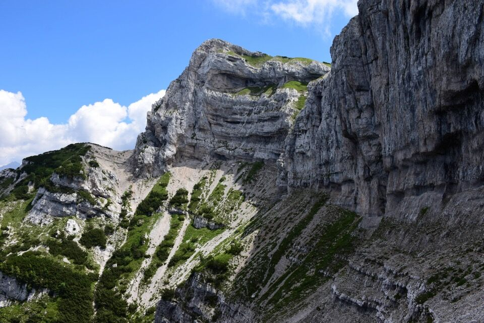 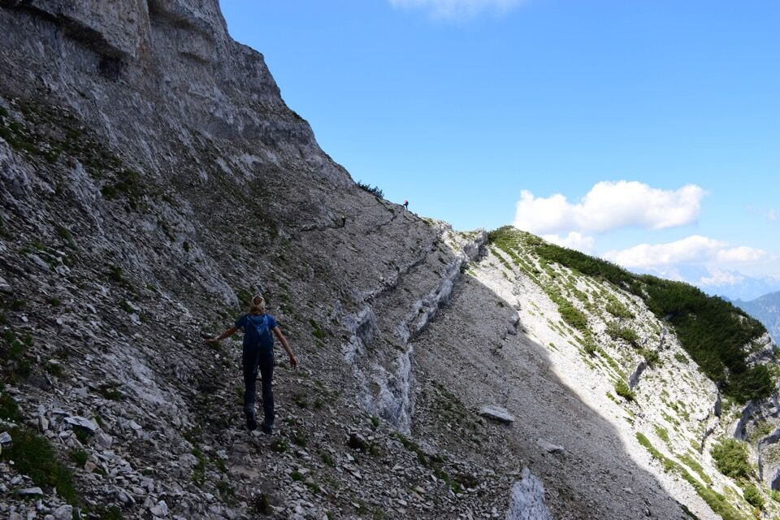 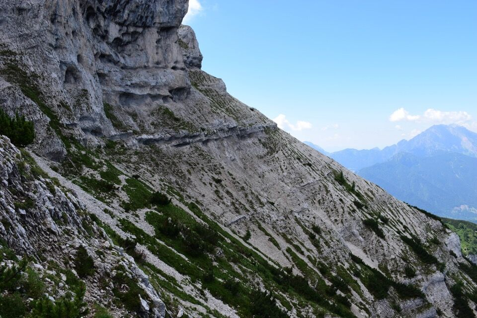Nella parte finale basta seguire le tracce dei camosci.
L'inizio della cengia superiore.
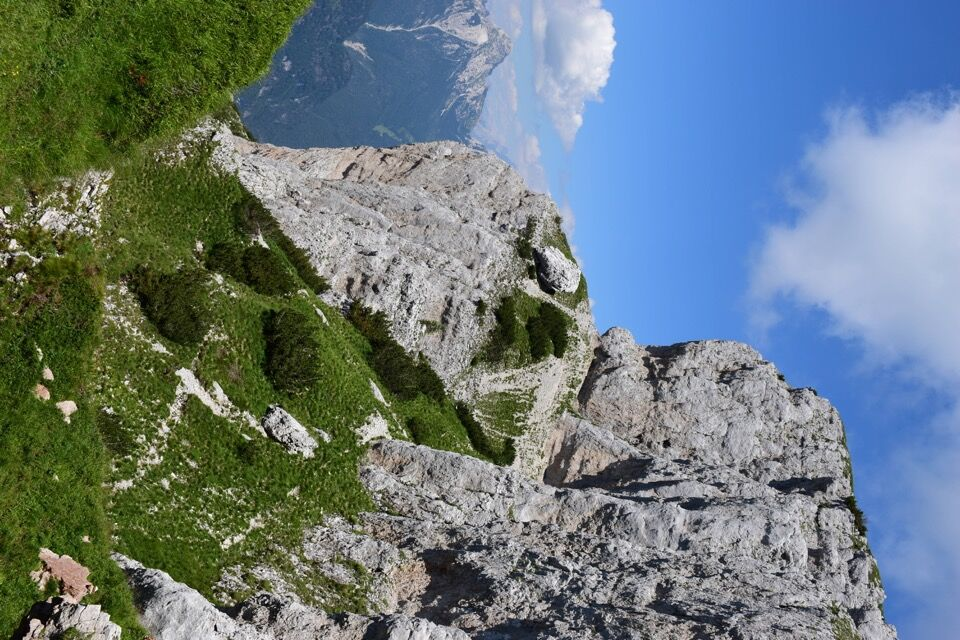Bellissimi i Libri di San Daniele.
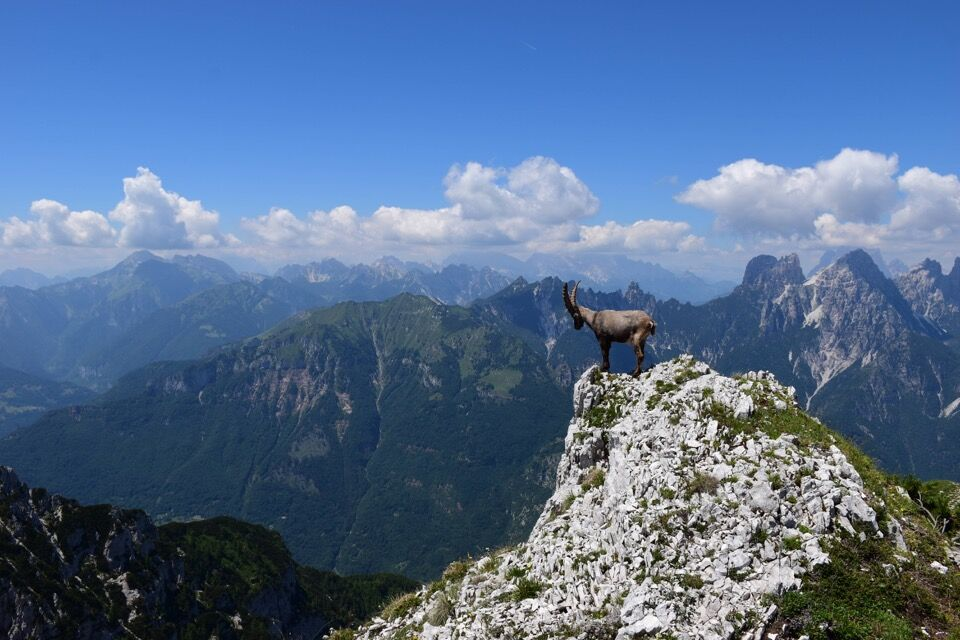 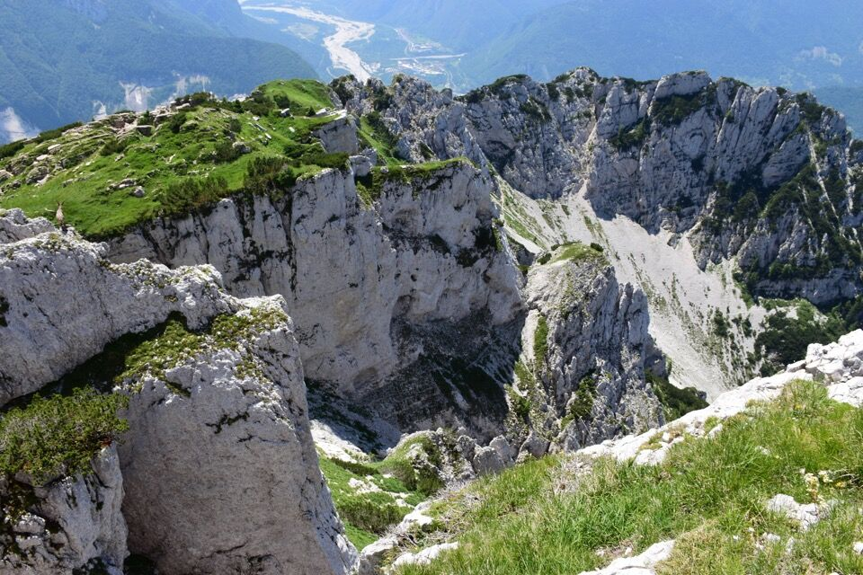Verso il Piave.
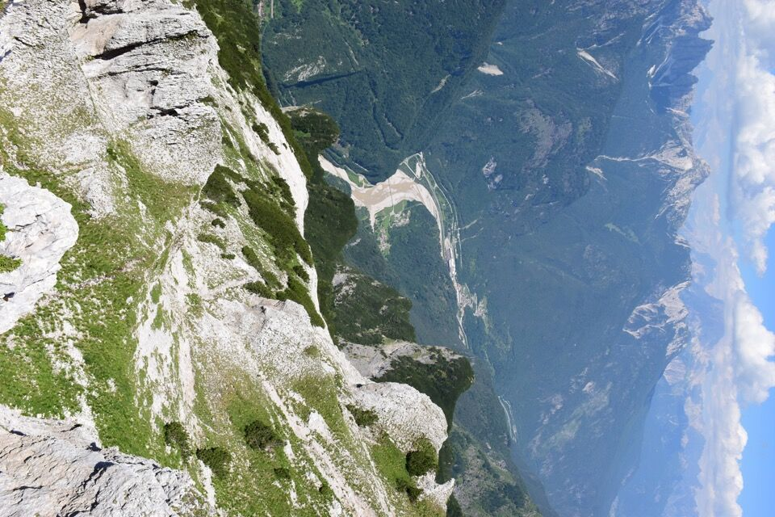Ecco la cima del Borgà con il Duranno dietro.
Verso il monte Zita e la Palazza: mi dicono che c'è un bel cengione da percorrere in quel versante.
Lo spallone su cui eravamo diverse ore prima.
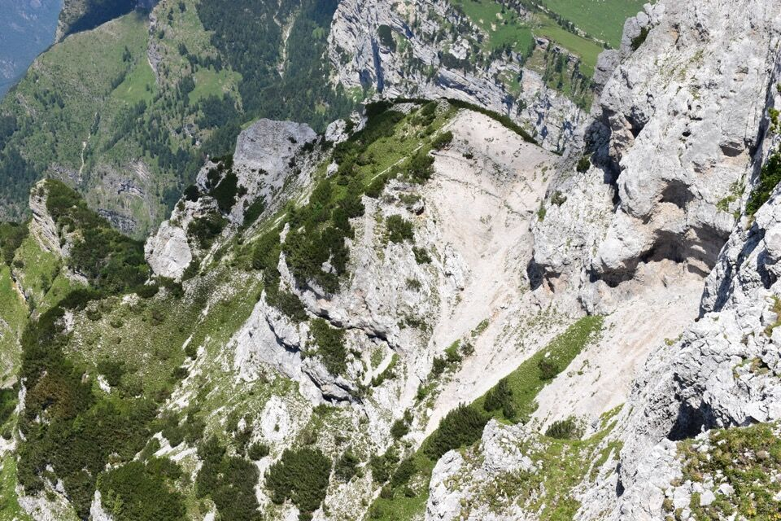Il signor Duranno: credo questo sia il versante della via dei primi salitori.
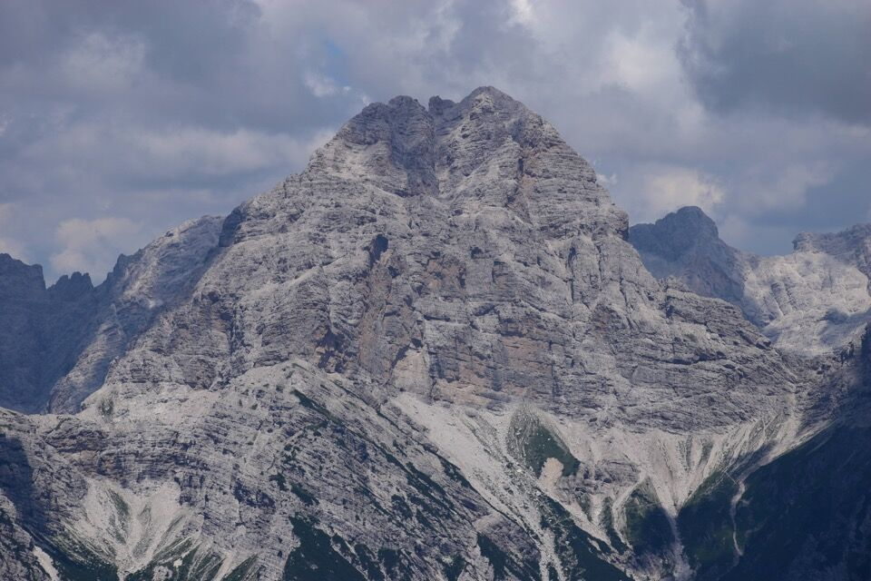 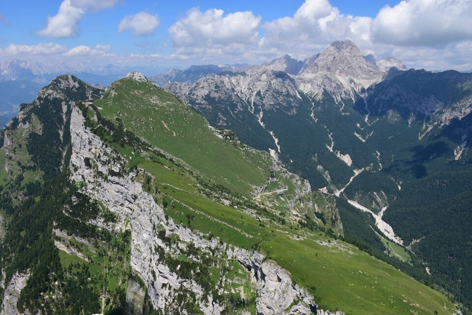
Laggiù cima Laste con la parete in versante val Montina.
Laggiù l'interessantissimo gruppo Viéres-Vacalizza: si vede benissimo la cengia della Covarata, e pure, più bassa, la cengia di mezzo percorsa da Luca Basso di recente. Non vedo l'ora di salire sui Viéres dalla val Cimoliana.

Il Cornetto, col complicato versante che dà sulla val Vajont.
Si torna giù.
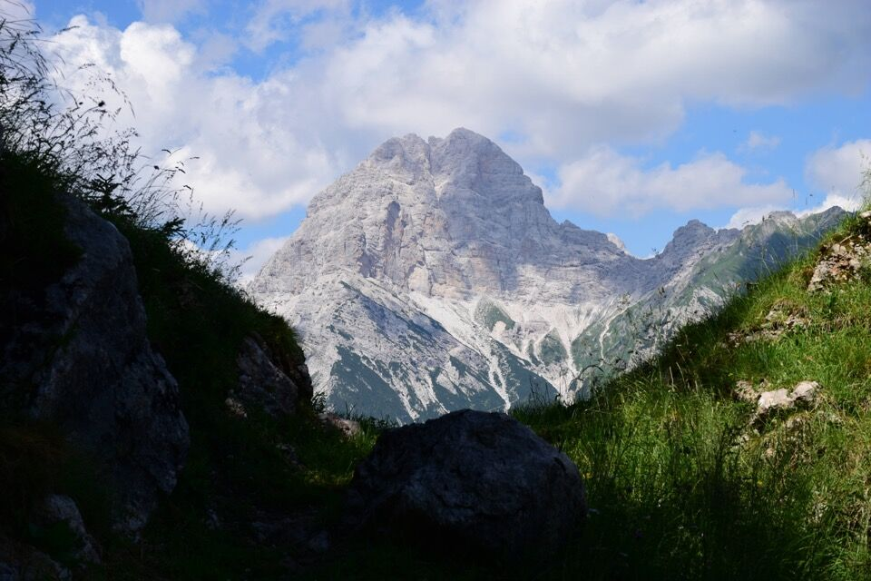